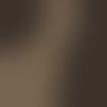
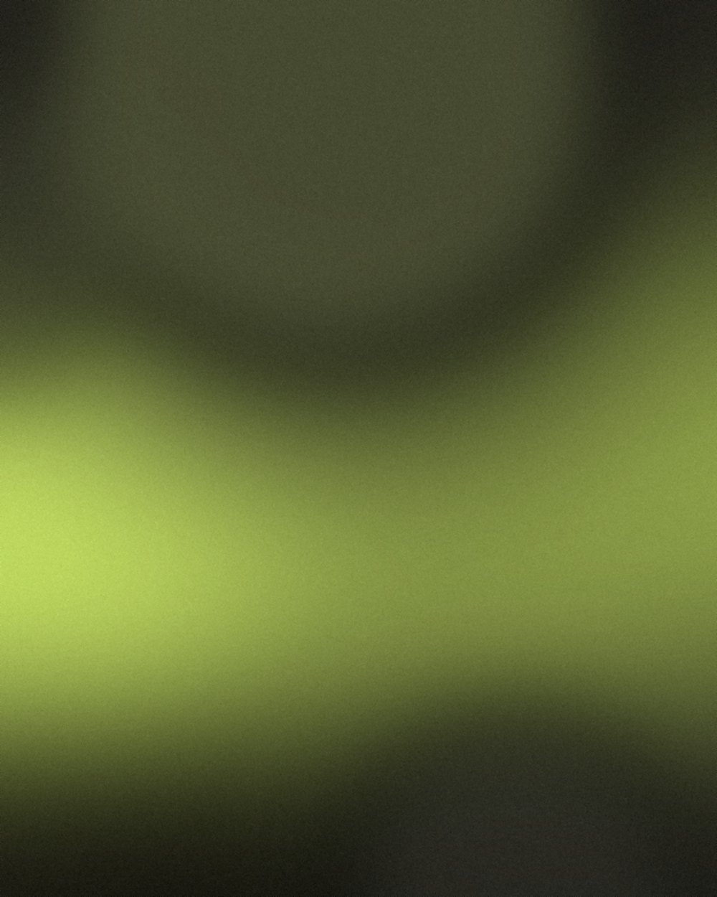

An editorial, dark-mode toolkit built on warm stone, acid lime, and analog noise — for teams who want their software to feel made, not generated.


Pin us to your roadmap. We'll bring the noise, the lime, and the editorial calm — you bring the idea.